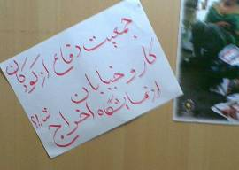

|
|
غرفه جمعیت دفاع از کودکان کار و خیابان در نمایشگاه کتاب تعطیل شد
جمعه24 اردیبهشت 1389
کمیته گزارشگران حقوق بشر - آنچه در پی میآید اطلاعیه جمعیت دفاع از کودکان کار و خیابان پس از تعطیلی غرفه این نهاد مدنی در بیست و سومین نمایشگاه بینالمللی کتاب تهران است:
ظهر امروز ۸۹/۲/۲۳ ماموران حراست نمایشگاه بینالمللی کتاب با مراجعه به غرفهی تبلیغاتی جمعیت دفاع اظهار داشتند که به دستور مدیر ستاد هماهنگی، غرفه باید تخلیه شود و اعضای حاضر از نمایشگاه خارج شوند.
با وجود پیگیری مسئولین جمعیت دفاع در واحدها و بخشهای مختلف نمایشگاه، نه تنها هیچ حکم کتبی ارائه نگردید بلکه هیچ مدرک و دلیلی برای این حکم صادره اعلام نشد وحتی حاضر به افشای نام نهادی که این حکم را صادر کرد نیز نشدند.

با توجه به اینکه تهدید مأموران حراست مستقیما" متوجه اعضاء جمعیت دفاع بود؛ مسئولین غرفه مجبور به تخلیه غرفه و ترک نمایشگاه شدند.
در نهایت ساعت ۱۵ روز ۲۳ اردیبهشت غرفه تعطیل گردید.